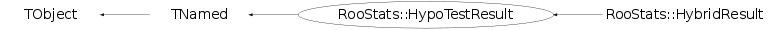

class RooStats::HypoTestResult: public TNamed
HypoTestResult is a base class for results from hypothesis tests. Any tool inheriting from HypoTestCalculator can return a HypoTestResult. As such, it stores a p-value for the null-hypothesis (eg. background-only) and an alternate hypothesis (eg. signal+background). The p-values can also be transformed into confidence levels (CLb, CLsplusb) in a trivial way. The ratio of the CLsplusb to CLb is often called CLs, and is considered useful, though it is not a probability. Finally, the p-value of the null can be transformed into a number of equivalent Gaussian sigma using the Significance method.
Function Members (Methods)
public:
| virtual | ~HypoTestResult() |
| void | TObject::AbstractMethod(const char* method) const |
| virtual Double_t | AlternatePValue() const |
| virtual void | Append(const RooStats::HypoTestResult* other) |
| virtual void | TObject::AppendPad(Option_t* option = "") |
| virtual void | TObject::Browse(TBrowser* b) |
| static TClass* | Class() |
| virtual const char* | TObject::ClassName() const |
| virtual Double_t | CLb() const |
| Double_t | CLbError() const |
| virtual void | TNamed::Clear(Option_t* option = "") |
| virtual TObject* | TNamed::Clone(const char* newname = "") const |
| virtual Double_t | CLs() const |
| Double_t | CLsError() const |
| virtual Double_t | CLsplusb() const |
| Double_t | CLsplusbError() const |
| virtual Int_t | TNamed::Compare(const TObject* obj) const |
| virtual void | TNamed::Copy(TObject& named) const |
| virtual void | TObject::Delete(Option_t* option = "")MENU |
| virtual Int_t | TObject::DistancetoPrimitive(Int_t px, Int_t py) |
| virtual void | TObject::Draw(Option_t* option = "") |
| virtual void | TObject::DrawClass() constMENU |
| virtual TObject* | TObject::DrawClone(Option_t* option = "") constMENU |
| virtual void | TObject::Dump() constMENU |
| virtual void | TObject::Error(const char* method, const char* msgfmt) const |
| virtual void | TObject::Execute(const char* method, const char* params, Int_t* error = 0) |
| virtual void | TObject::Execute(TMethod* method, TObjArray* params, Int_t* error = 0) |
| virtual void | TObject::ExecuteEvent(Int_t event, Int_t px, Int_t py) |
| virtual void | TObject::Fatal(const char* method, const char* msgfmt) const |
| virtual void | TNamed::FillBuffer(char*& buffer) |
| virtual TObject* | TObject::FindObject(const char* name) const |
| virtual TObject* | TObject::FindObject(const TObject* obj) const |
| RooStats::SamplingDistribution* | GetAltDistribution() const |
| Bool_t | GetBackGroundIsAlt() const |
| virtual Option_t* | TObject::GetDrawOption() const |
| static Long_t | TObject::GetDtorOnly() |
| virtual const char* | TObject::GetIconName() const |
| virtual const char* | TNamed::GetName() const |
| RooStats::SamplingDistribution* | GetNullDistribution() const |
| virtual char* | TObject::GetObjectInfo(Int_t px, Int_t py) const |
| static Bool_t | TObject::GetObjectStat() |
| virtual Option_t* | TObject::GetOption() const |
| Bool_t | GetPValueIsRightTail() const |
| Double_t | GetTestStatisticData() const |
| virtual const char* | TNamed::GetTitle() const |
| virtual UInt_t | TObject::GetUniqueID() const |
| virtual Bool_t | TObject::HandleTimer(TTimer* timer) |
| virtual ULong_t | TNamed::Hash() const |
| Bool_t | HasTestStatisticData() const |
| RooStats::HypoTestResult | HypoTestResult(const char* name = 0) |
| RooStats::HypoTestResult | HypoTestResult(const RooStats::HypoTestResult&) |
| RooStats::HypoTestResult | HypoTestResult(const char* name, Double_t nullp, Double_t altp) |
| virtual void | TObject::Info(const char* method, const char* msgfmt) const |
| virtual Bool_t | TObject::InheritsFrom(const char* classname) const |
| virtual Bool_t | TObject::InheritsFrom(const TClass* cl) const |
| virtual void | TObject::Inspect() constMENU |
| void | TObject::InvertBit(UInt_t f) |
| virtual TClass* | IsA() const |
| virtual Bool_t | TObject::IsEqual(const TObject* obj) const |
| virtual Bool_t | TObject::IsFolder() const |
| Bool_t | TObject::IsOnHeap() const |
| virtual Bool_t | TNamed::IsSortable() const |
| Bool_t | TObject::IsZombie() const |
| virtual void | TNamed::ls(Option_t* option = "") const |
| void | TObject::MayNotUse(const char* method) const |
| virtual Bool_t | TObject::Notify() |
| virtual Double_t | NullPValue() const |
| Double_t | NullPValueError() const |
| void | TObject::Obsolete(const char* method, const char* asOfVers, const char* removedFromVers) const |
| static void | TObject::operator delete(void* ptr) |
| static void | TObject::operator delete(void* ptr, void* vp) |
| static void | TObject::operator delete[](void* ptr) |
| static void | TObject::operator delete[](void* ptr, void* vp) |
| void* | TObject::operator new(size_t sz) |
| void* | TObject::operator new(size_t sz, void* vp) |
| void* | TObject::operator new[](size_t sz) |
| void* | TObject::operator new[](size_t sz, void* vp) |
| RooStats::HypoTestResult& | operator=(const RooStats::HypoTestResult&) |
| virtual void | TObject::Paint(Option_t* option = "") |
| virtual void | TObject::Pop() |
| virtual void | Print(Option_t* = "") const |
| virtual Int_t | TObject::Read(const char* name) |
| virtual void | TObject::RecursiveRemove(TObject* obj) |
| void | TObject::ResetBit(UInt_t f) |
| virtual void | TObject::SaveAs(const char* filename = "", Option_t* option = "") constMENU |
| virtual void | TObject::SavePrimitive(ostream& out, Option_t* option = "") |
| void | SetAltDistribution(RooStats::SamplingDistribution* alt) |
| void | SetBackgroundAsAlt(Bool_t l = kTRUE) |
| void | TObject::SetBit(UInt_t f) |
| void | TObject::SetBit(UInt_t f, Bool_t set) |
| virtual void | TObject::SetDrawOption(Option_t* option = "")MENU |
| static void | TObject::SetDtorOnly(void* obj) |
| virtual void | TNamed::SetName(const char* name)MENU |
| virtual void | TNamed::SetNameTitle(const char* name, const char* title) |
| void | SetNullDistribution(RooStats::SamplingDistribution* null) |
| static void | TObject::SetObjectStat(Bool_t stat) |
| void | SetPValueIsRightTail(Bool_t pr) |
| void | SetTestStatisticData(const Double_t tsd) |
| virtual void | TNamed::SetTitle(const char* title = "")MENU |
| virtual void | TObject::SetUniqueID(UInt_t uid) |
| virtual void | ShowMembers(TMemberInspector& insp) |
| virtual Double_t | Significance() const |
| virtual Int_t | TNamed::Sizeof() const |
| virtual void | Streamer(TBuffer& b) |
| void | StreamerNVirtual(TBuffer& b) |
| virtual void | TObject::SysError(const char* method, const char* msgfmt) const |
| Bool_t | TObject::TestBit(UInt_t f) const |
| Int_t | TObject::TestBits(UInt_t f) const |
| virtual void | TObject::UseCurrentStyle() |
| virtual void | TObject::Warning(const char* method, const char* msgfmt) const |
| virtual Int_t | TObject::Write(const char* name = 0, Int_t option = 0, Int_t bufsize = 0) |
| virtual Int_t | TObject::Write(const char* name = 0, Int_t option = 0, Int_t bufsize = 0) const |
protected:
| virtual void | TObject::DoError(int level, const char* location, const char* fmt, va_list va) const |
| void | TObject::MakeZombie() |
private:
| void | UpdatePValue(const RooStats::SamplingDistribution* distr, Double_t& pvalue, Double_t& perror, Bool_t pIsRightTail) |
Data Members
public:
| enum TObject::EStatusBits { | kCanDelete | |
| kMustCleanup | ||
| kObjInCanvas | ||
| kIsReferenced | ||
| kHasUUID | ||
| kCannotPick | ||
| kNoContextMenu | ||
| kInvalidObject | ||
| }; | ||
| enum TObject::[unnamed] { | kIsOnHeap | |
| kNotDeleted | ||
| kZombie | ||
| kBitMask | ||
| kSingleKey | ||
| kOverwrite | ||
| kWriteDelete | ||
| }; |
protected:
| RooStats::SamplingDistribution* | fAltDistr | |
| Double_t | fAlternatePValue | p-value for the alternate hypothesis (small number means disfavored) |
| Double_t | fAlternatePValueError | error of p-value for the alternate hypothesis (small number means disfavored) |
| Bool_t | fBackgroundIsAlt | |
| TString | TNamed::fName | object identifier |
| RooStats::SamplingDistribution* | fNullDistr | |
| Double_t | fNullPValue | p-value for the null hypothesis (small number means disfavored) |
| Double_t | fNullPValueError | error of p-value for the null hypothesis (small number means disfavored) |
| Bool_t | fPValueIsRightTail | |
| Double_t | fTestStatisticData | result of the test statistic evaluated on data |
| TString | TNamed::fTitle | object title |
Class Charts
{kind=link}
{kind=link}
{kind=link}
{kind=link}

Function documentation
void Append(const RooStats::HypoTestResult* other)
Add additional toy-MC experiments to the current results. Use the data test statistics of the added object if it is not already set (otherwise, ignore the new one).
void SetAltDistribution(RooStats::SamplingDistribution* alt)
void SetNullDistribution(RooStats::SamplingDistribution* null)
void SetTestStatisticData(const Double_t tsd)
void SetPValueIsRightTail(Bool_t pr)
Bool_t HasTestStatisticData(void)
Double_t CLbError() const
compute CLb error Clb = 1 - NullPValue() must use opposite condition that routine above
Double_t CLsplusbError() const
void UpdatePValue(const RooStats::SamplingDistribution* distr, Double_t& pvalue, Double_t& perror, Bool_t pIsRightTail)
updates the pvalue if sufficient data is available
Double_t AlternatePValue() const
Return p-value for alternate hypothesis
{ return fAlternatePValue; }Double_t CLb() const
Convert NullPValue into a "confidence level"
{ return !fBackgroundIsAlt ? NullPValue() : AlternatePValue(); }Double_t CLsplusb() const
Convert AlternatePValue into a "confidence level"
{ return !fBackgroundIsAlt ? AlternatePValue() : NullPValue(); }Double_t Significance() const
familiar name for the Null p-value in terms of 1-sided Gaussian significance
{return RooStats::PValueToSignificance( NullPValue() ); }void Print(Option_t* = "") const
Print out some information about the results Note: use Alt/Null labels for the hypotheses here as the Null might be the s+b hypothesis.